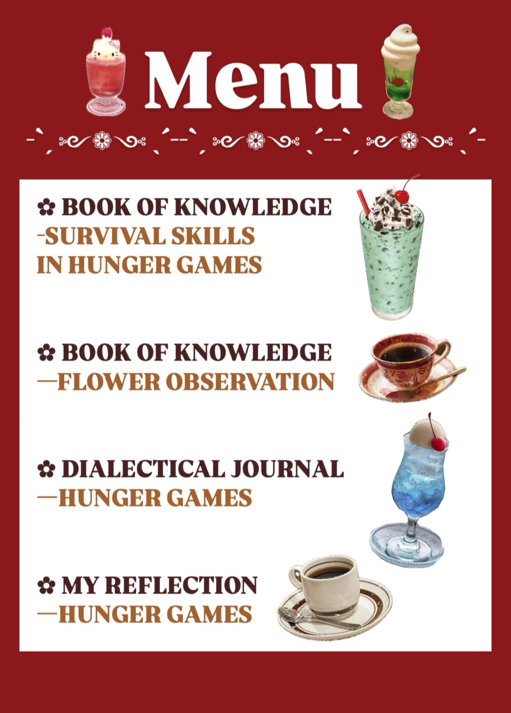

•*¨*•.¸¸☆*･ﾟ•*¨ Hi there! Please read the menu first. •*¨*•.¸¸☆*･ﾟ•*¨
What do you want to drink today? ↓↓↓

Now you can scroll down and start to read all my works ❁.❁.❁.
✿ BOOK OF KNOWLEDGE - SURVIVAL SKILLS IN HUNGER GAMES
After I read Hunger Games, I got interested into those survival skills that Katniss used in the forest.
So I decided to do some research about it and also draw some of the skills.
In spring, We walked around the campus and observed all kinds of flowers.
We even took photos with those beautiful flowers and made some notes about their appearance.
In our Book of Knowlede, we add some information beside every flowers,
I also drew realistic illustrations about those flowers we observed.
After I read Hunger Games, I have some feelings that reflected to the quote in the novel.
The first voice is the quote.
The second voice is my thoughts and interpretations about the quote.
After I done reading Hunger Games, Professor Nelson came to NTTU to have a lecture and talk about the novel. Before her lecture, I didn't really think anything deep about the plot. During the lecture, it seems like she led us to read and analyze the book again.
When I first read The Hunger Games, I had my own perspective about certain parts of the plot. But Professor Nelson provided so many new ideas in her lecture, there were some thoughts that I hadn’t even thought about. It truly blew my mind. Hunger Games is a masterpiece, it includes different aspects of social issues.
After reading the novel and listening to the lecture, I think writing a whole novel really is magical. It is just like creating and constructing your own kingdom, you have to consider all the details carefully. Matching all the small clues together and weaving a huge web. Inspired by the novel, the lesson I took this semester, and Professor Nelson's lecture, I would like to create my own novel one day.
•*¨*•.¸¸☆*･ﾟ•*¨ This is the end, see you next time. *•.¸¸☆*･ﾟ•*¨*•.¸¸☆
About the Author (ʋ •ﻌ• ʋ)
Hello! I'm Jamie Tsai, a college student who enjoys reading novels and expressing my thoughts through illustrations.
I hope you enjoy my progress here!
If you want to know more about me, click the link below.